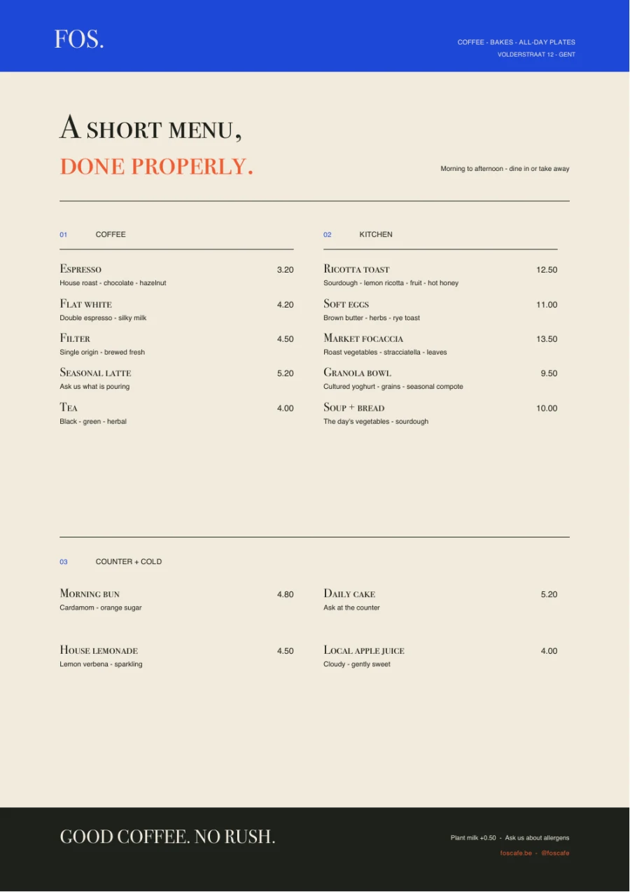
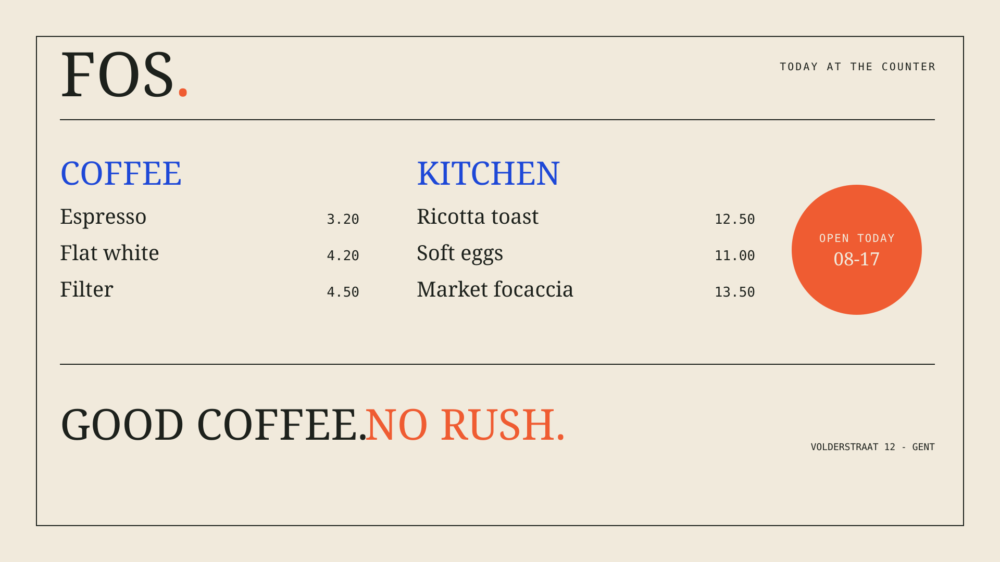
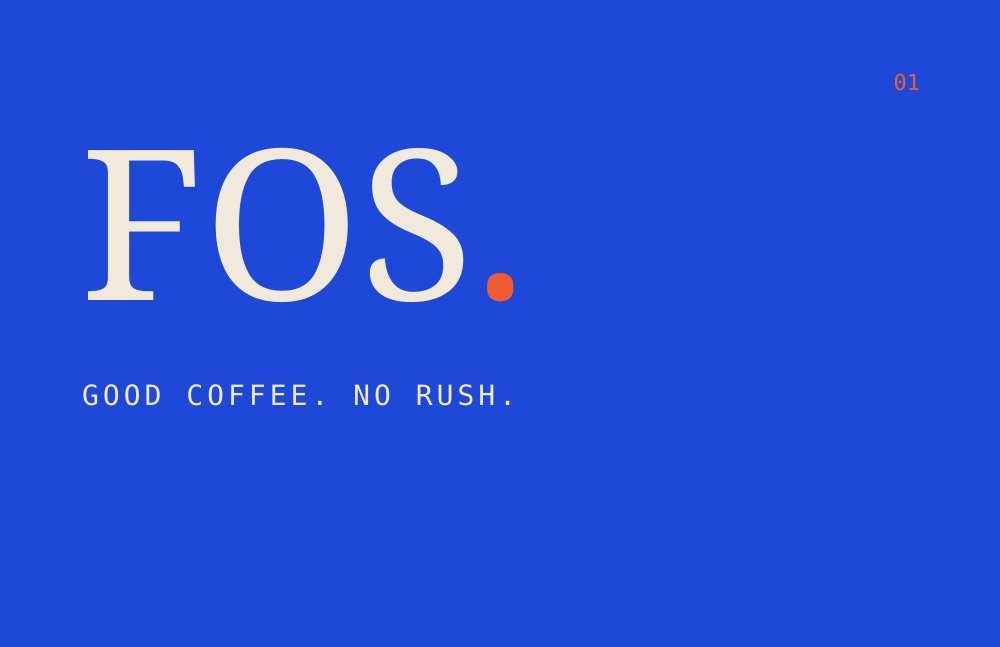
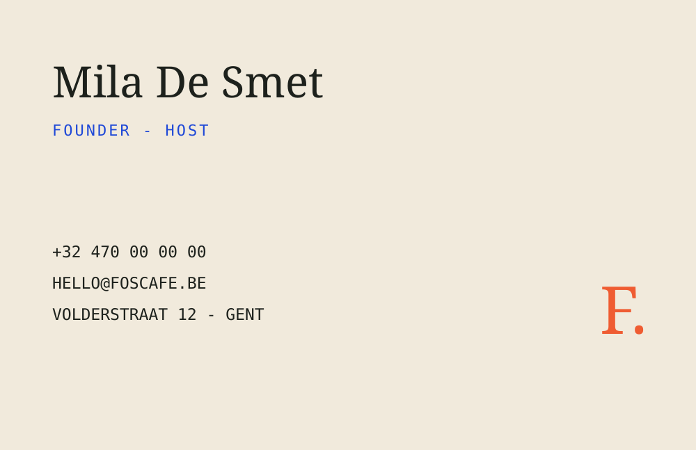
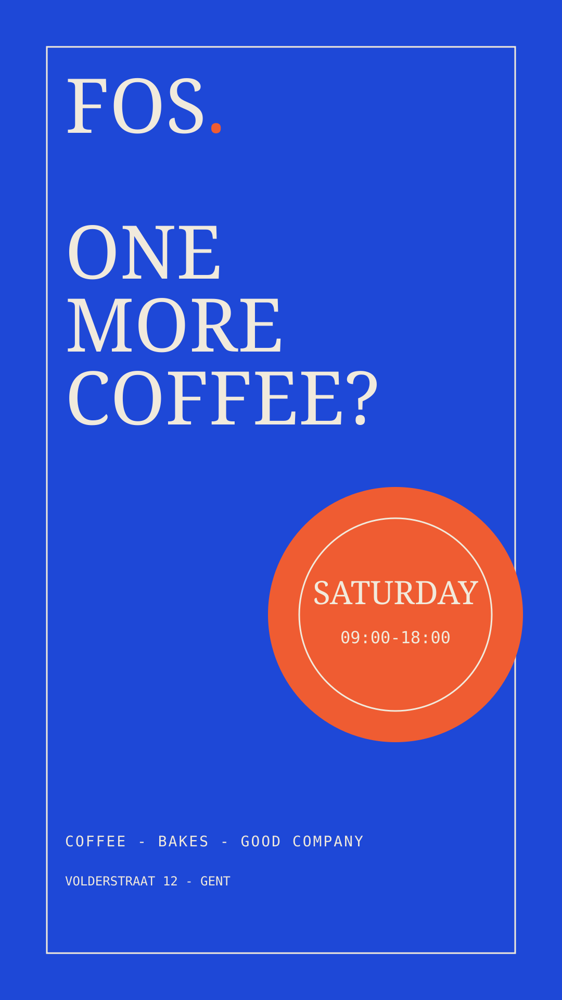
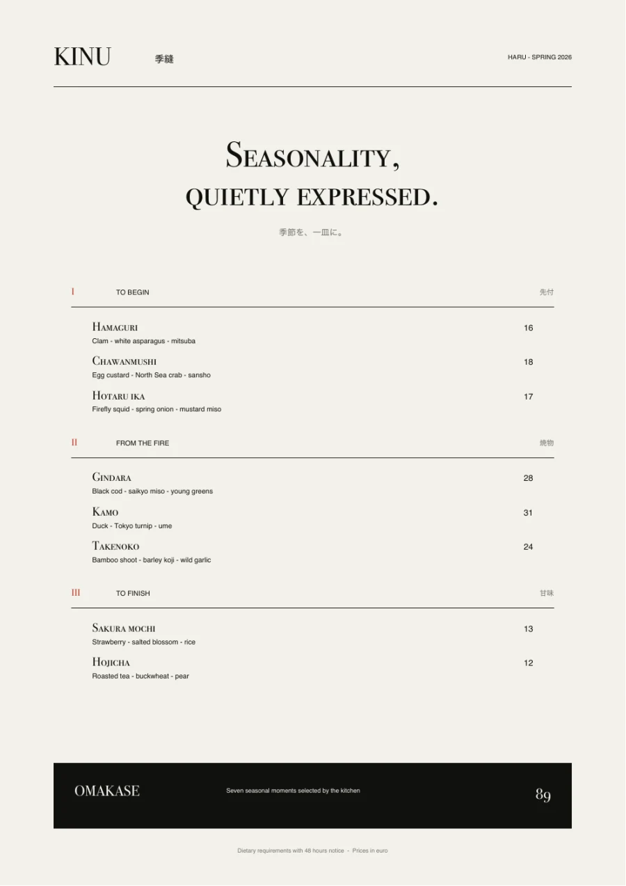
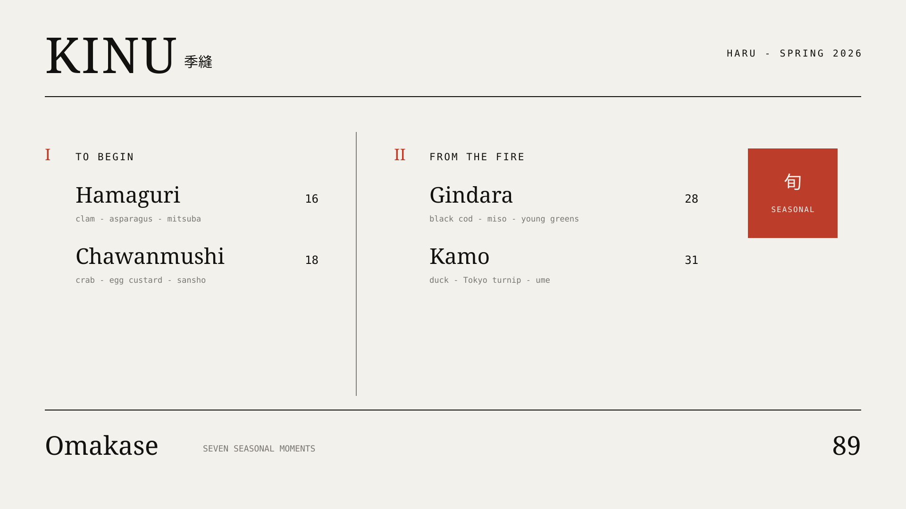
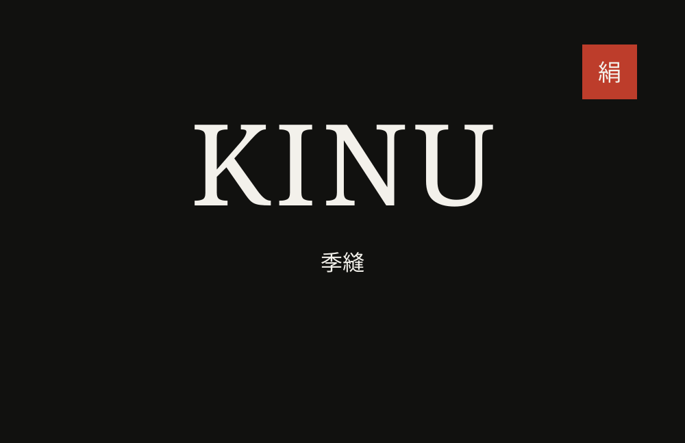
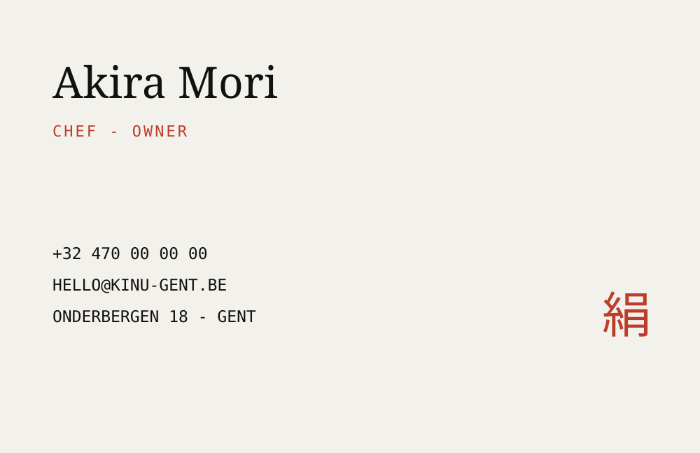
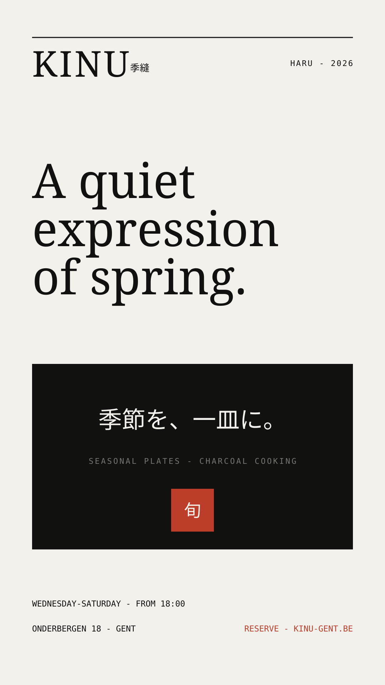

Chapter one01 / 03
Café concept · Ghent
FOS
Warm mornings.
A brighter corner.
A bold neighbourhood café identity built around warmth, familiarity and the simple ritual of a good morning.
- Identity direction
- Web design
- Frontend build
Web design & visual direction for hospitality
Good hospitality begins before someone walks through the door. I shape the first impression—the tone, the atmosphere and the clear next step that turns interest into a visit.
Café concept · Ghent
Warm mornings.
A brighter corner.
A bold neighbourhood café identity built around warmth, familiarity and the simple ritual of a good morning.
Japanese dining · Ghent
Seasonality.
Quietly expressed.
An ultra-minimal Japanese restaurant concept where restraint, seasonality and considered detail set the tone.
Property rental · Ghent
Historic character.
A new chapter.
A classic European residence concept designed to turn architectural atmosphere into qualified viewing enquiries.
Two concept projects, developed as complete brand worlds rather than isolated screens.
01 Café identity & digital experience
Concept case study · 2026
A neighbourhood café made to feel like the best part of the morning.

The assignment
Create an identity and one-page website for an independent Ghent café that feels welcoming from the first glance and turns local discovery into an in-person visit.
The challenge
Many café websites either disappear into soft beige sameness or become so design-led that basic information is difficult to find. FOS needed personality, but also immediate clarity around food, hours and location.
The response
Oversized serif headlines create character while bright cobalt details, compact labels and direct calls to action keep the experience lively. The page moves naturally from atmosphere to menu to visit information.
GOOD COFFEE
NO RUSH.
Key decisions
“Come for the good part” communicates the emotional promise before explaining the menu.
Live opening status, prices, address and directions remove the small frictions that cost visits.
Short, warm phrases give future menus, posters and social posts a consistent starting point.
02 Restaurant identity & reservation journey
Concept case study · 2026
A quiet digital expression of contemporary Japanese dining.
The assignment
Position a contemporary Japanese restaurant in Ghent as refined and culturally considered, then carry that atmosphere through menu discovery and a focused reservation journey.
The challenge
The identity needed to avoid the familiar shorthand of lanterns, brush textures and decorative symbols. It also had to make restraint feel intentional—not unfinished—and keep the practical booking path obvious.
The response
A paper-toned canvas, Didot typography, fine rules and carefully placed Japanese text create a composed editorial system. One vermillion seal provides orientation while generous space slows the pace.
季節を、
一皿に。
Key decisions
The “Haru” menu and scroll marker make seasonality part of the interface, not just the copy.
A single signature dish receives space, origin and preparation detail to signal the kitchen’s standards.
A focused modal keeps reservation details clear without sending guests into a visually unrelated experience.
A brand should still feel like itself when the screen ends. These concept systems show how the same visual thinking extends into print, in-store communication and campaigns.
Explore the collectionA practical café toolkit with enough energy for the street, enough clarity for the counter, and one recognisable voice across every format.





A seasonal restaurant system that preserves quiet precision from the table menu to the reservation card and the street-facing campaign.





A focused set of creative services for businesses that care about how they are seen.
Distinctive, responsive websites structured around a clear customer action.
—Typography, colour, imagery and voice brought together into one coherent identity.
—Menus, displays, stationery, posters and campaigns designed to live naturally inside the same visual world.
—I do not begin with colours or a favourite style. I begin by understanding what the business needs people to notice, feel and do.
My process turns that understanding into one clear idea, then tests the idea against real content, real screens and real decisions.
My decision filter
Listen & observe
I learn how the business works, who it needs to reach, what already feels true and where customers hesitate. I look at competitors to find the conventions worth keeping—and the sameness worth leaving behind.
Frame the problem
Before deciding how the work looks, I decide what it must communicate. I organise the content around the customer journey, establish the hierarchy and remove anything that competes with the main purpose.
Set the direction
Typography, colour, imagery, tone and composition become a system rather than a collection of preferences. Contrast creates hierarchy, rhythm creates coherence, and a distinctive point of view makes the business easier to remember.
Make & test
A concept has to survive real use. I test the reading order, responsive behaviour, contrast, keyboard access and calls to action while the work is still flexible. The result should feel considered without asking the visitor to work for it.
Refine & extend
The final pass is about rhythm, consistency and restraint. I improve performance, polish interactions and extend the identity into the materials the business actually needs—from menus and displays to campaigns and stationery.
“Good design should make a business feel more like itself—and make choosing it feel easier.”
Studio S. is a small digital-design practice in Ghent for independent businesses with ambition, character and a story worth telling.
I combine brand thinking, editorial design and frontend development in one direct process. Fewer handovers. Clearer choices. A finished website that stays true to the original idea.